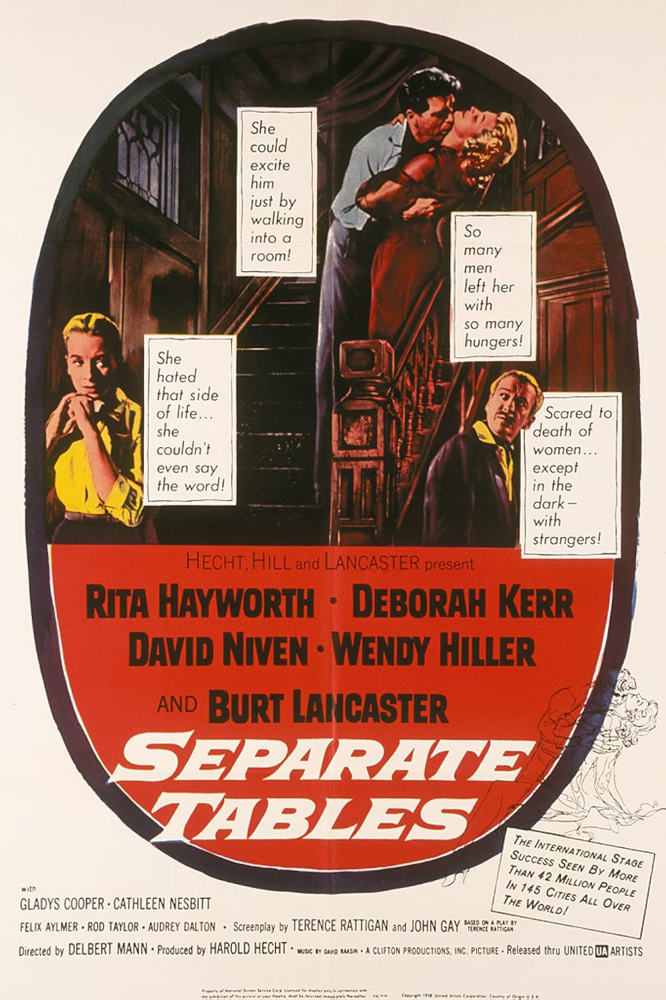

Separate Tables
31st Academy Awards
(Oscars 1959)
7 Nominations, 2 Awards
| Nominations | ||
|---|---|---|
| Category | Nominees | Result |
| Best Motion Picture | Harold Hecht | Nominated |
| Actor | David Niven | Won |
| Actress | Deborah Kerr | Nominated |
| Actress in a Supporting Role | Wendy Hiller | Won |
| Writing (Screenplay--based on material from another medium) | John Gay and Terence Rattigan | Nominated |
| Cinematography (Black-and-White) | Charles Lang, Jr. | Nominated |
| Music (Music Score of a Dramatic or Comedy Picture) | David Raksin | Nominated |